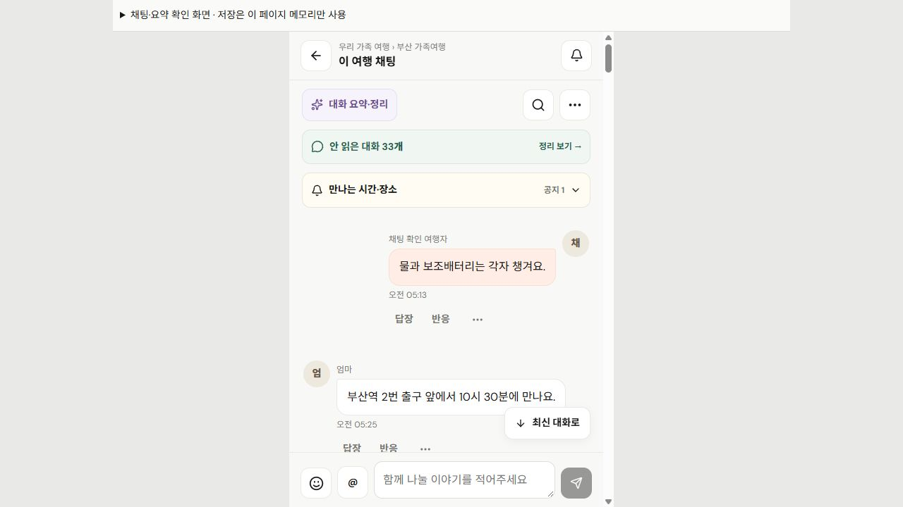
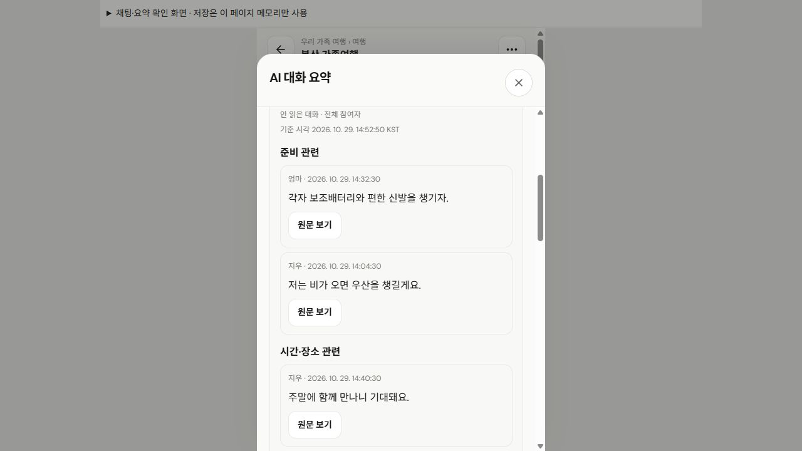

채팅 조작·원문 모아보기·이모티콘·기존 모임 저장소·탐색·관심 목록·타이포 관련 검사 통과. 실패·건너뜀 0.
SPOTLOG · 로컬 화면 검수 기록
MOA의 채팅 장점,
스팟로그에 어떻게 반영했나
안 읽은 대화에서 바로 정리 화면으로 이동. 기간·작성자별로 실제 발언을 모으고 원문 확인. 답장·반응·멤버 태그·글자 크기까지 현재 모임방 안에서 사용.
관련 검사 79 / 79 통과웹 빌드 통과네이티브 타입 검사 통과실제 LLM·서버 연결 전
01 · 실제로 확인한 참고 화면
MOA 모바일 화면과 같은 프로젝트의 채팅·요약 UI 소스 확인. 공개 화면은 ‘모여봄’ 프로토타입. 실제 AI 분석·실시간 서버 연동이 완료된 서비스라는 의미는 아님.
- 가져온 장점: 안 읽은 구간 진입, 전체·특정인과 기간 선택, 기준 시각, 원문 연결, 인용 답장, 반응, 멤버 태그, 글자 크기, 방 도구.
- 스팟로그에 맞춘 기준: 모임 전체 채팅과 하위 정모·여행 채팅 유지. 기존 모임원 권한 유지. 원문 발췌와 AI 결과 예시를 화면에서 분리.
- 참고 소스:
E:/AI_Project/somoim/prototype/app.js,chat-font.js,sticker-packs.js. 공개 프로토타입과 로컬 소스의 관련 UI 확인.
02 · 적용한 기능과 실제 동작
| 기능 | 누르면 보이는 것 | 현재 적용 범위 |
|---|---|---|
| 안 읽은 대화 → 정리 | 채팅 상단의 ‘정리 보기’ 또는 ‘대화 요약·정리’ → 현재 방의 정리 화면 | 진입 시 마지막 읽음 경계 유지. 열기·검색·정리만으로 읽음 위치를 바꾸지 않음. |
| 기간·작성자별 원문 | 전체 참여자 / 특정인 → 안 읽은 대화·오늘·최근 7일·기간 선택·이 채팅 전체 → ‘선택한 대화 모아보기’ | 한국 시각 기준. 준비 관련 / 시간·장소 관련 / 확인·논의 관련 / 기타로 단어 기준 묶기. 원문 내용·작성자·시각 그대로 표시. |
| 결과 변경 상태 | 조건을 바꾸면 이전 결과 안내. 새 발언이 생기면 건수와 ‘다시 모아보기’ | 명시적으로 누른 시각을 기준으로 결과 고정. 수정·삭제된 원문은 기존 결과에서 즉시 제외. 12개씩 확인 후 더 보기. |
| 원문 이동 | 결과의 ‘원문 보기’ → 같은 방의 해당 메시지 강조. ‘최신 대화로’로 복귀 | 현재 방에 남아 있고 볼 권한이 있는 원문만 이동. 다른 방 메시지를 연결하지 않음. |
| 인용 답장 | 메시지의 ‘답장’ → 입력창 위 인용 미리보기 → 직접 전송. 인용 부분을 누르면 원문 이동 | 답장은 원문 ID 참조로 저장. 다른 방·삭제된 원문은 답장 불가. 저장 실패 시 작성 중 내용 유지. |
| 이모지 반응·이모티콘 | ‘반응’ → 👍 ❤️ 😂 ✅ ❓ 중 선택. 입력창의 웃는 얼굴 → 일반 이모지·캐릭터 선택 | 반응은 본인 선택만 추가·취소. 캐릭터 4팩·34개 고정 ID. 선택 후 미리보기, 전송 버튼으로 확정. |
| @ 멤버 태그 | 입력창의 @ → 현재 모임원 선택 → 작성 중 문장에 이름 삽입 | 초안에 삽입하는 기능. 실제 푸시·멘션 알림 서버 연결을 뜻하지 않음. |
| 검색·글자 크기 | 돋보기 → 내용·사람 검색. 방 도구 → 채팅 글자 16 / 18 / 20px | 기본 본문 16px. 크기 변경 시 읽던 메시지 위치 보정. 현재 화면의 표시 설정이며 전체 앱 폰트를 바꾸지 않음. |
| 현재 모임방 도구 | ⋯ → 같은 모임 안의 전체·정모·여행 채팅 이동, 여기까지 읽음 표시, 모임 홈·현재 일정 상세 | 공지 작성은 운영 권한에 맞게 표시. 방 목록은 현재 모임에 한정. 다른 모임 전체 채팅을 같은 단계에 나열하지 않음. |
‘확인·논의 관련’은 확인이라는 단어가 있는 발언을 묶은 제목. ‘확인 완료’라고 적힌 문장을 미해결 사항으로 판정하지 않음. 담당자·예약·확정 여부도 추론하지 않음.
03 · 사용 순서
내 모임›모임 전체 또는 번개·정모·여행›해당 채팅›안 읽은 대화 · 정리 보기
- 대상과 기간 선택 → 전체 참여자 또는 특정인 선택. 필요한 기간 선택.
- 선택한 대화 모아보기 → 원문 수·기준 시각 확인. 같은 단어 주제의 발언 확인.
- 원문 보기 → 정리 화면을 닫고 해당 메시지로 이동. 문맥을 본 뒤 직접 답장·반응.
- 조건 변경·새 대화 → 다시 모아보기로 새 결과 확인. 결과만으로 공지·일정·예약을 자동 변경하지 않음.
안 읽음 건수가 다른 이유
채팅의 미읽음 배너는 다른 사람의 발언 기준. 원문 모아보기의 미읽음 범위는 마지막 읽음 이후 내 발언도 포함. 화면에 해당 설명과 선택 범위의 실제 발언 수 표시.
04 · 기존 구조·권한·연결 범위
그대로 유지한 구조
- 하단 메뉴와 모임 → 번개·정모·여행의 계층 유지. 채팅은 해당 모임·일정 안에서 진입.
- 현재 모임원이 모임 전체·하위 일정 채팅 확인. 정모 참석·불참 여부를 새로운 입장 조건으로 추가하지 않음.
- 탈퇴·강퇴·차단·다른 계정·다른 방은 기존 원문 결과 재사용 불가. 권한 상실 시 정리 내용 즉시 숨김.
- 보관된 모임은 기록 읽기 유지, 새 메시지·반응 작성 제한. 공지·준비·일정 수정은 기존 담당자·운영 권한 적용.
- 기존 개인 여행·여행기·찜·관리자 저장소 유지. 채팅 변경은 기존 계정별 모임 저장 공간 안에서 처리.
현재 동작과 연결 전인 부분
| 구분 | 현재 기준 |
|---|---|
| 발언 모아보기 | 실제 LLM 호출 아님. 현재 방의 실제 텍스트를 날짜·작성자로 고르고 단어로 묶는 읽기 기능. 서버·외부 AI로 대화 전송 없음. |
| AI 요약·준비 반영 예시 | 별도 접이 영역으로 분리. 등록된 원문 ID와 본문이 정확히 일치하는 예시만 제공. 선택 후 준비 항목·공지·투표 초안을 명시적으로 반영하는 체험. 임의의 새 대화를 분석한 결과가 아님. |
| 실제 서비스 연동 | 실시간 채팅 서버·여러 기기 동기화·푸시·멘션 알림·운영자 신고 전송·실제 AI 분석은 연결 전. 로컬 화면과 저장 기능 완성을 서버 구현 완료로 표시하지 않음. |
| 검수용 대화 | 별도 검수 페이지의 메모리 저장소 사용. 새로 고침 시 예시로 복귀. 고객·관리자 원본 저장소에 테스트 대화·반응을 쓰지 않음. |
05 · 반영 화면


이미지를 누르면 원본 크기로 확인. 화면의 ‘AI 대화 요약’은 진입창 이름이며, 내부의 실제 발언 모아보기와 고정 AI 예시의 동작 범위는 별도 안내.
06 · 검사 결과와 근거
웹 TypeScript 검사 포함 production 빌드 완료. 기존 큰 번들에 대한 Vite 크기 안내는 남아 있음.
루트 TypeScript 검사 완료. 실제 iOS·Android 기기 조작이나 앱스토어 빌드 검수와는 별도.
- 원문 모아보기 15개: KST 날짜 경계·최근 7일·윤년 날짜·미읽음 경계·내 발언 포함·특정인·정확한 본문·수정/삭제·새/지연 발언·다른 방/계정·권한 회수·중복 ID·단어 분류 확인.
- 채팅 조작 9개: 인용 ID·동일 방·원문 삭제·현재 회원 권한·보관 상태·문자/이모티콘 제한·본인 반응 토글·이전 저장 자료 호환·저장 실패 보존 확인.
- 브라우저 UI: 정리 진입·전체/특정인·기간·결과·원문 이동·최신 대화 이동·인용 답장·반응·멤버 이름 삽입·글자 크기 확인. 새 발언 갱신·수정/삭제의 결과 제외는 자동 검사로 확인.
- 320 / 390 / 460px: 가로 메뉴 사이 8px 기준, 주요 버튼 44px 이상, 페이지 가로 넘침 확인. 좁은 화면의 가로 메뉴는 내부 스크롤로 처리. 별도 간격 검수 기록에 화면·실측 저장.
- 실측 예: 모임 홈 탭 간격 8px, 버튼 높이 50px. 320px에서 페이지 가로 넘침 0. 정모 상세의 긴 탭은 가로 탐색 영역 안에서 스크롤.
- 범위 구분: 320/390/460px 브라우저 너비 검수. 실제 휴대폰 키보드·운영체제·네트워크·푸시·실제 LLM 품질은 이번 통과 항목에 포함하지 않음.
구현 파일과 추가 근거
- ChatWorkspace.tsx · 방 도구, 미읽음 경계, 인용 답장, 반응, 태그, 검색, 글자 크기.
- ConversationSummary.tsx · 범위 선택, 명시적 실행, 결과 기준 시각, 원문 이동.
- chatDigest.ts · KST 기간, 계정·방·권한 검사, 원문 스냅샷과 수정·삭제 제외.
- chatActions.ts · 현재 회원·방 검증, 인용 ID, 반응 토글.
- TogetherApp.tsx · 기존 모임/일정 연결, 별도 AI 예시, 권한에 따른 조작.
- 원문 모아보기 검사 · 모임 홈 실측 · 정모 상세 실측.
07 · 로컬에서 확인
검수 화면은 실제 TogetherApp을 재사용하는 개발 전용 페이지. 예시 대화·전송·반응은 이 페이지 메모리에만 저장. 일반 고객 계정의 대화가 자동으로 채워지지 않음.
127.0.0.1 링크는 로컬 서버가 실행 중인 PC에서 열기. 이번 작업은 로컬만 반영. 외부 서비스에 글 작성·전송하거나 Git 업로드·배포하지 않음.